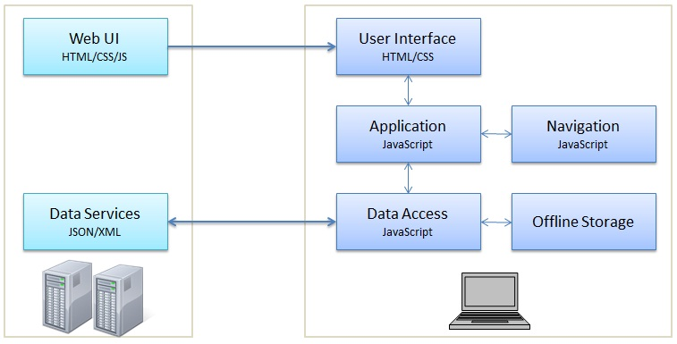

Recently single page applications popularity are growing and this is the reason that i wrote this post. Kendo released new version before week ago and there are some new features like ColorPicker, Tooltip, Multiselect and possibility to make Single-Page Application with their framework. In this post I will show you the pros and cons of SPA(Single-page application) and a simple demo using Kendo UI framework.

What is SPA
Shortly SPA is combinations of HTML, JavaScript and CSS that retrieves code once. Applications has only one page that's separated in different parts. When user interacts the script will load different parts to the screen without making requests to the server (in some cases it's possible to have AJAX requests). This makes SPA very light and fast web application. SPA likes Single Document Interface (SDI) presentation technique popular in native desktop applications.
Pros and Cons
Pros
- Fast and low traffic of data - user doesn't need to refresh the page; data can retrives with AJAX
- Easy to design - it's easier to design one page than many pages (templates)
- SEO - you will receive the same page rank from searching engine like multi page app; if you have rich content on the page web spiders will gave you bigger PR
- SPA is perfect for advertisement for one product (like a flyer)
Cons
- If you have a lot of information on page, it will loading slower
- You should to use some scripting (in the most of cases - libraries)
- Switching the different parts of the page is possible to be laggy if you have a lot of materials
- Single-page app developers spend more time and energy to merge all the information in one page and making to look pretty good
Simple demo with Kendo UI
1. Creating html
This simple html code is core of our SPA. Highlighted row (with green) is one of the most important part of our app. We have section, navigation and application divs. We'll use application div for the layout of our app where we'll put our content.
<header>
<h2>Single page app with Kendo UI</h2>
</header>
<div id="section">
<nav>
<ul>
<li><a id="showHome" href="#">Home</a></li>
<li><a id="showCars" href="#">My Cars</a></li>
<li><a id="showAboutme" href="#">About me</a></li>
</ul>
</nav>
<div id="application"></div>
</div>
<script id="home" type="text/kendo-tmpl">
<div>Welcome to my Single-Page Application with Kendo UI</div>
</script>
<script id="myCars" type="text/kendo-tmpl">
<div>
<img id="carPicture" data-bind="attr: { src: pictureUrl}" />
<div id="Name" data-bind="text: name"></div>
<div id="Name" data-bind="text: model"></div>
<div id="Name" data-bind="text: cost"></div>
</div>
</script>
<script id="aboutMe" type="text/kendo-tmpl">
<div>Hi guys I'm Simeon Nenov You can visit my blog at <a href="http://ssnenov.wordpress.com">http://ssnenov.wordpress.com</a></div>
</script>
2. Making view models
Now it's time to show you how to make our view model using Kendo MVVM (You can see some demos here). You can use here Kendo datasource and transport object to make AJAX request to the server for dynamic content. But we'll use static data without datasource. Our carsViewModel has got four properties: name, model, cost, pictureUrl that we are displaying, using data-bind attribute.
<img id="carPicture" alt="" data-bind="attr: { src: pictureUrl}" />
<div id="Name" data-bind="text: name"></div>
<div id="Name" data-bind="text: model"></div>
<div id="Name" data-bind="text: cost"></div>
var carsViewModel = new kendo.observable({
name: "Audi",
model: "A8",
cost: 200000,
pictureUrl: "http://d3403mtifmmdhn.cloudfront.net/new_experience_touts/images/49/original/1MYCO_A8_Photos_Tout_13TDI_A8b002x_r8_RGB.jpg?1342493775"
});
3. Views and layouts
What is view and layout?
With instances of View class you can handling DOM events, making data binding or you can change the type of element using tagName with the following syntax:
var view = new kendo.View("Hi!", { tagName: "span" });
The Layout class inherits from View class and have additional functionality to render other views. Simple you can render layout as view and the result will be nested layouts. This following code should to add into your script file:
var viewHome = new kendo.View("#home");
var viewCars = new kendo.View("#myCars", {model: carsViewModel});
var viewAboutMe = new kendo.View("#aboutMe");
var layout = new kendo.Layout("<section id="content"></section>")
layout.render($("#application"));
At the first three rows I declared our views.
Constructor kendo.View has two parameters: kendo.View(<#id or html code>, ).
After views I declared our layout and I rendered #application as layout with following code:
layout.render($("#application"));
Constructor kendo.Layout has one parameter: kendo.Layout(<#id or html code>).
You can use many views and layouts without limitations but my recommendation is to separate them in different files. For example views.js and layouts.js.
4. Implementing routes
With Kendo UI we also can make router which navigates user between the application pages. To make your router you should to make three steps:
- Router initializing
- Setting routes
- Starting the router
- Router initializing
var router = new kendo.Router(); - Setting routes
router.route("/openme", function() { alert("Hello world!"); }); - Starting the router
$(function() { router.start(); });
- Router initializing
After these three steps we have router. Now if we open our page and add "#/openme" after URL then we'll see alert with text: "Hello world!".
For example: mywebsite.com#/openme
This is very simple way how to make your routes but you can use more functionality like "route parameters", "optional route parameters", "route navigation" and etc.
Parameters
To set parameters in your router just add ":" before the parameter name and add in your function parameters with the same name.
router.route("/openme/:name", function(name) {
alert("Hello " + name);
}
The result from previews code will be alert with text: "Hello John". We also can have many parameters:
router.route("/items/:category/:id", function(category, id) {...
Optional parameters
Difference here is brackets. You have to put bracket before and after parameter name.
router.route("/items(/:category)(/:id)", function(category, id) {
You can see more about routing at Kendo UI documentation.
5. Adding some styles
I added some styles, Kendo UI Menu and some content to my application and now we are ready with our SPA. You can see the result here and source code here.
* I used jQuery "on" function to handling click event on Kendo UI Menu because in jsfiddle.net I can't make routing. If you download my source code and you want to use routing you have to delete these rows:
$("#showHome").on("click", function (){ layout.showIn("#content", viewHome); });
$("#showCars").on("click", function (){ layout.showIn("#content", viewCars); });
$("#showAboutme").on("click", function (){ layout.showIn("#content", viewAboutMe); });
and make your link compatible with your routes:
<ul>
<li><a id="showHome" href="#">Home</a></li>
<li><a id="showCars" href="#/mycars">My Cars</a></li>
<li><a id="showAboutme" href="#/aboutme">About me</a></li>
</ul>